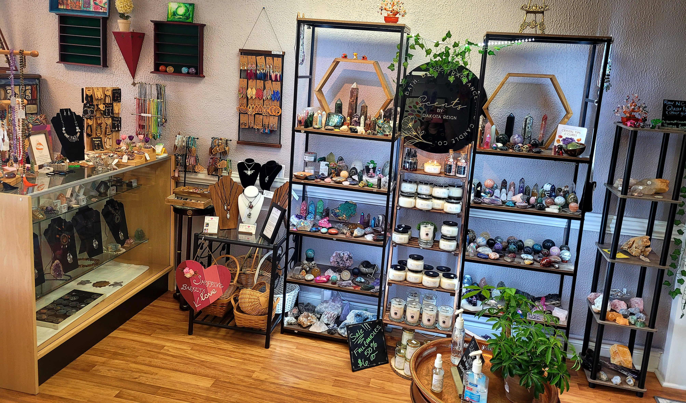

Meet Our Vendors!


Take a look at some of our vendors below!
- Scraps of Jel- Chapel Hill, NC (Epoxy Art and decor)
- Marci Miles- Garner, NC (Intentional Candles and Self Care Coaching)
- Lake Fairy Creations- Durham, NC (custom and costume jewelry and accessories)
- Stitchy & Witchy- Creedmoor, NC (Crochet creations)
- Doodle & Doughnut- Household items to save the planet (the "un-paper" towel, reusable feminine napkins, custom burpclothes, etc)
- Sawdust & Sage- Willow Spring, NC (custom wooden yard/home decor, upcycled pallets)
- Just Threads-Bunnlevel, NC (sachets, self care items to make you and your house feel good)
- Mary Griffis- Fuquay Varina, NC (custom yard art, custom teas, hand painted cement figurines)
- Shanz Vinyl & Resin Creationz- Sanford, NC (custom bags, accessories)
- Bo Leaf Beads- Harnett County, NC (custom upcycled jewelry)
- GoldEn Wellness- Coats, NC (custom essential oils products and wellness packets)
- Scents by Dakota Reign- Raleigh, NC (custom candles, accessories, and self care products)
- Weaving Willow- Henderson, NC (handcrafted dream catchers, accessories, decor)
- SplinterCat Creations- Sanford, NC (stone jewelry wrapping)
- Glam-A-Door Decor- Angier, NC (Seasonal and Custom Wreaths)
- SigNature Suds- Fuquay Varina, NC (All Natural cleaners and detergents, yard art)
- Just-A-Tish Designs- Apex, NC (Tie-Dye Apparel)
- Jennifer Terrell- Angier, NC (custom journals)
- Thomas' Gems- Cary, NC (Raw quartz and semi precious stones, All from NC)
- Birds of a Feather Designs- Pittsboro, NC (Intentional, Reiki charged earrings and wands)
- Beata's Beads- Charlotte, NC (Handmade Mala sets and crystal jewelry)
- Get Under My Skin- Lillington, NC (Custom bags and accessories)
- Poured with Love- Angier, NC (Custom Paint Pour Art)
- Sendee- Lillington, NC (Custom and upcycled Stationary and Journals)
- Capricornus Dream Creations- Raleigh, NC (Crystals Merchant)
- Handmade With Love by JJ- NC (Homemade Soaps)